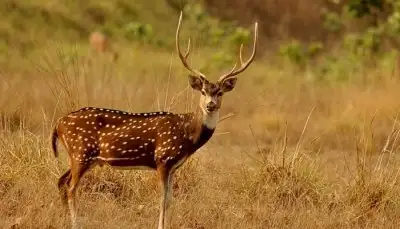

1.Malom Wildlife sanctuary
location
This seldom explored wildlife sanctuary is one of the hidden Kasaragod attractions. The lush green hills of this sanctuary are the home of exotic flora and fauna. Tourists wishing to witness the rich wildlife of Molam can spot animals like elephants, bison, tigers, deer, and many more, may find this sanctuary a blissful place. Being home to more than 200 birds, this place is a heaven for birdwatchers.
2.Bekal fort
location

As one of the unique yet best places to visit in Kasaragod, Bekal fort stands firm in its place. Standing at the mighty Arabian Sea banks, this 300 years old palace tells a tale of persistence, resistance, and power. It is the largest Fort in Kerala and was built by the Shivappa Nayaka of Keladi in 1650 AD. This place is a must-visit for tourists wishing to relive the charm of the bygone era.
3.Mallikarjuna temple
location

Kasaragod visiting places are considered as one of the most popular tourist spots and are known as the heart for peaceful temples of Lord Shiva. Situated in the middle of Kasaragod city, the devotees of this temple daily pray to Lord Shiva. Built by the Iyer Kings, this temple is open to all to visit and witness the holy idol of Lord Shiva. The temple is not only a fine piece of architecture but also beholds beautiful paintings in its wall.